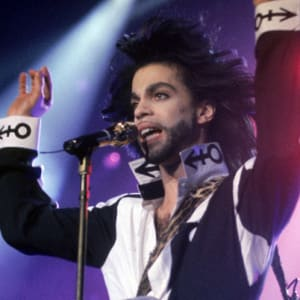
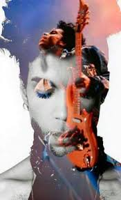

Fun Facts

- His real name was Prince.
- He was a Jehovah's Witness.
- He wrote more songs for others than himself.
- He simultaneously held the number one spots for film, single, and album.
- He scrapped an entire album after having a spiritual epiphany.

Background on Prince
Prince Rogers Nelson was born in Minneapolis, Minnesota, on June 7, 1958, the son of jazz singer Mattie Della (née Shaw) and pianist and songwriter John Lewis Nelson. All four of his grandparents hailed from Louisiana. Prince was given his father's stage name, Prince Rogers, which his father used while performing with his mother in a jazz group called the Prince Rogers Trio. In 1991, Prince's father told A Current Affair that he named his son Prince because he wanted Prince "to do everything I wanted to do". Prince was not fond of his name and wanted people to instead call him Skipper, a name which stuck throughout his childhood. Prince said he was "born epileptic" and had seizures when he was young. He stated, "My mother told me one day I walked in to her and said, 'Mom, I'm not going to be sick anymore,' and she said, 'Why?' and I said, 'Because an angel told me so. Prince's younger sister, Tyka, was born on May 18, 1960. Both siblings developed a keen interest in music, which was encouraged by their father. His parents were members of the Seventh-day Adventist Church, an evangelical denomination.
Most Popular Songs
| Name | Year Released |
|---|---|
| When Doves Cry | (1984) |
| Kiss | (1986) |
| Raspberry Beret | (1985) |
| Get Off | (1991) |
| 1999 | (1982) |
| Purple Rain | (1984) |